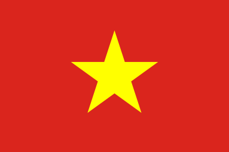

일본
일본동남아시아
동남아시아의 경우에는 필리핀, 싱가포르, 말레이시아. 미얀마에서 인기가 많으며, 태국에서는 자체영상물의 인기가 상당히 높은데다가, 인도네시아에서도 인도 드라마와 터키 드라마가 방영되는 경우가 많기 때문에 아주 잘나가는것은 아니지만 그럼에도 가요면에서는 엄청난 영향을 받고, 한국 웹툰도 꽤 인기를 얻는 등 상당한 인기가 있는편이다. 특히, K-POP의 인기는 미국과도 맞먹을 정도. 필리핀 야후에는 아예 '한류(KOREAN WAVE)' 라는 카테고리까지 있다.
사실 동남아시아는 사람 수도 많고 워낙 다양한 문화를 서로서로 좋아해서 그냥 한류뿐만 아니라 다 좋아한다. 한국 대중문화뿐 아나라 일본과 중화권 대중 문화, 인도 드라마를 중심으로 하는 인도 대중 문화나 태국산 영상 매체도 인기가 있고, 말레이시아와 인도네시아에서는 터키 드라마도 상당한 인기가 있다.
물론, 한류에 대한 반감이 없는 것은 아니라서 학부모들이나 언론매체에서는 청소년들이나 젊은층들이 한류에 물들여져서 전통문화는 경시하고 사치스럽거나 퇴폐적인 문화에 물들여져 가는거 아니냐는 기사나 의견이 종종 실리기도 한다. 사실 이런 레퍼토리가 전 세계 공통이기는 하다. 한국이나 일본도 과거에는 그런 레퍼토리가 판을 쳤기는 했다.
그래도 마냥 부정적인 기사만 나오는 것은 아니고 한류를 벤치마킹해서 자국의 대중문화를 진흥시켜야 한다는 주장도 많이 나오기도 한다.
페이스북이나 트위터같은 SNS 계정에서 좋아요나 팔로우 등을 하는 동남아시아인들을 역추적해보면 정말 다양한 문화를 많은 사람들이 좋아하는 것을 볼 수 있다.
2017년 1월 기준으로 드라마 태양의 후예가 돌풍을 일으키면서 아시아 및 대양주 지역 한류 동호인이 4010만여 명으로 53% 늘었다.
2018년에는 자카르타 팔렘방 아시안 게임 폐막식에서 iKON과 슈퍼주니어가 폐막식 공연을 하기도 했다. 한류의 강한 영향력을 보여주는 사례라고 할 수 있겠다.
- 베트남
 태국
태국
베트남은 같은 사회주의 국가였던 만큼, 한류가 유행하기 시작한 배경이 중국과 유사하다. 1975년 통일 이후 완전한 사회주의 국가를 추구하지만, 경제난으로 인해 개혁이 반드시 필요했다. 1986년 유명한 도이모이(Doi Moi) 정책을 시행함으로써 베트남은 사실상 시장경제체제를 가지게 되었다. 이후 계속된 산업화와 현대화 정책을 통해 국민들의 소득이 증가했다. 자연스럽게 질 높은 문화 컨텐츠에 대한 욕구가 증대되었다. 하지만 베트남 내부에서는 아직 양질의 문화 상품을 생산하기에는 무리였다. 이에 따라 베트남 방송국들은 해외 문화에 눈길을 돌린다.
베트남에 최초로 수입된 일본 드라마는 1994년 방영된 '오싱'이라는 작품으로, 전후의 가난을 극복해가는 스토리로 상당한 인기를 끌었다. 하지만 그 이후 방영된 드라마들은 일본 샐러리맨들의 생활이나 베트남에서는 아직 익숙하지 않은 현대적 배경을 소재로 하고 있어 실패로 끝났다. 이렇게 공감하기 힘든 일본 드라마나 무거운 주제가 많은 중국 드라마를 제치고 가볍게 볼 수 있고 유교문화를 공유하는 한국 드라마가 선택되었다.
베트남에서 최초로 소개된 드라마는 1994년 방영된 KBS作 '느낌'으로, 첫 소개작부터 인기를 끌었다. 이후 1999년 5월까지 14편의 한국 드라마가 소개된다. 이 중 가장 히트를 친 드라마는 장동건, 이영애 주연의 '의가형제'와 중국에서도 인기였던 '별은 내가슴에' 이다. 2000년대에는 '모래시계', '가을동화', 그리고 '겨울연가'와 '대장금'이 엄청난 인기를 끌었다. 이 두 작품은 한류가 유행한 대부분의 국가에서 대히트를 쳤다.
드라마들이 이처럼 대거 방영된 데에는 국내 기업들의 공도 있었다. 삼성이나 LG 등의 대기업들은 TV광고를 내보내고 광고료를 드라마를 통채로 사서 지불했다. 방송국 입장에서도 시청률이 괜찮게 나오는 드라마를 헐값에 살 수 있으니 받아들였고, 기업들은 원 광고료의 몇 배에 달하는 경제 효과를 얻었다.
2010년대 후반 박항서가 베트남 축구 국가대표팀, U-23 대표팀을 맡아 유례없는 성공을 이어나가면서 양국 간의 이미지가 좋아지기도 했다. 박항서 본인의 베트남 내 인기가 급등하고, 위상도 엄청나게 높아진 것은 덤.
태국 역시 한류의 영향력이 매우 막강한 곳 중 하나이다. 태국의 한류는 이미 알려진대로 K-POP을 중심으로한 아이돌 팬덤과 온라인 게임이 그 중심축을 이루고 있고 한국드라마도 여러번 방송되어서 꽤나 재미를 보기도 했으며 여러 K-POP 그룹들이 태국인들을 멤버로 두고있다보니까 자연히 태국인들의 인기도 더욱 커졌다.
그리고 2000년대 초반부터 중반까지는 한국 학습만화가 의외로 꽤 흥하기도 했고, 2010년대 들어서는 한국의 웹툰이 태국어로 번역되어 인터넷에 제법 퍼졌고, 2010년대 중반부터는 아예 한국업체에서 공식적으로 진출하거나 현지업체와 제휴해면서 한국 웹툰이 널리 퍼지게 되었고 현지작가들도 모집하고 있는 중이다.
번역이 시작된 시기도 다른 주요 언어보다 비교적 빠른 편이다. 게다가 태국 현지 팬들도 K-POP 그룹의 보컬과 랩, 그리고 안무를 따라하는 커버 영상까지 올라올 정도다.
중동
이 지역은 기본적으로 튀르키예 드라마와 레바논/이집트 음악과 이집트의 TV 쇼 등 튀르키예와 레바논, 이집트의 대중문화가 크게 유행하고 있는 곳이다. 문화적으로 폐쇄적인 지역으로 알려져있으나 사실 이건 위성방송이 많이 보급되어있다는것을 감안하지 않은 얘기로 1990년대 이후로 위성방송이 널리 보급되면서 각 국가별로 수십여개 정도의 위성방송 채널을 기본적으로 수신하는 가정이 많은데 그 와중에 한국영상물도 꽤나 인기를 얻게 된것이다. 나름대로의 이란에서는 국영방송사에서 여러 사극이 수입되었다.
주몽, 대장금등 한국산 드라마들이 방영되며 인지도를 얻었고 2010년대 이후 여성층을 중심으로 매니아들을 모으며 꽤나 인기를 모으고 있다. 중동의 대표적인 문화 콘텐츠 제작국인 튀르키예에서도 미안하다 사랑한다, 넝쿨째 굴러온 당신, 풀하우스를 리메이크 할 정도. 기존 튀르키예 드라마의 경우 1회당 방영 시간이 2시간 이상에 100개 이상의 에피소드, 중간중간 광고까지 들어가기 때문에 중동 시청자들이 지루해하는 반면에 한국 드라마의 경우 길이가 짧고 소재도 튀르키예 드라마보다 다양하기 때문에 부담없이 즐길수 있어서 좋다는 반응이 많다. 인터뷰. 튀르키예 드라마는 대부분이 시대극이니 복수극인데 사실 몇몇 작품의 퀄리티는 꽤 좋아 유럽에서도 영향력이 크다.
그 외에 이집트, 레바논, 사우디 아라비아, 아랍 에미리트, 쿠웨이트, 이라크에서 최신 한국 드라마 시청, K팝 행사, 한국 연극 단체 관람 등이 점점 활발해지고 있다.
2017년 1월 기준으로 아프리카 지역과 같이 한류 동호인은 19만 명으로 전년(17만 명)에 이어 꾸준한 성장세를 보였다.
유럽
SM엔터테인먼트, YG엔터테인먼트, JYP엔터테인먼트등은 2011년을 유럽 공략의 원년으로 삼고 유럽을 목표로 달리고 있다. 분명한 것은 수출산업을 국가 기간산업으로 하는 한국에 새로운 유형의 수출 기간산업으로 자리잡아 가고 있다는 것이다. 한류가 일회성 문화의 흐름으로 끝나지 않고 다른 수출산업의 기폭제 역할을 하며 한국이라는 국가의 이미지 제고에 가장 큰 역할을 하고 있다. 눈에 보이는 비용으로만 바라볼 게 다가 아닌 것.
2012년, 싸이의 강남스타일 세계적 대유행을 타고, 11월에 싸이가 유럽의 프랑스 파리, 영국 런던, 독일 프랑크푸르트를 순방했다.
2016년, 영화 아가씨, 곡성, 부산행 등이 개봉 전 2016년 5월 칸 영화제에서 주목받으면서 한류팬이 1000만 명을 넘어섰다.
2018년 방탄소년단이 빌보드 1위에 오르며, 서구권에서 KPOP의 상징처럼 인기를 얻으며, K-POP만 전문적으로 번안해서 부르는 유튜브 가수도 나왔다. 몇 가수들은 큰 공연은 아님에도 몇번씩 유럽 투어를 개최하기도 했다.
아직 아시아에 비해 규모는 작다지만, 확실히 팬층은 형성되었고 지속적인 성장세를 보이고 있다.
영국, 프랑스, 폴란드, 루마니아 등이 한국문화가 제대로 자리를 잡은 나라들로 분석된다.
- 프랑스
- 독일
2011년 6월 10일, 11일 SM엔터테인먼트 아이돌들의 프랑스 공연이 성황리에 종료됐다. 이틀 간 관객 1만 4천여 명이 관람했다.
2011년 6월 9일, 10일, 르몽드와 르피가로는 'SM타운 라이브 월드투어 인 파리'에 대한 기사를 실었다. 르몽드는 '유럽을 덮친 한류'란 제목의 기사를 실었다. 르피가로는 '한류가 프랑스의 르 제니스를 강타하다'란 타이틀의 기사를 실었다.
2013년 2월 9일, 틴탑이 프랑스 파리의 르 트리아농(Le Trianon)에서 공연을 하였다. '르 트리아농(Le Trianon)'은 미국의 리한나도 공연을 한 공연장이라고 한다.
2018년에 이어 2019년에 방탄소년단이 2년 연속으로 프랑스 파리에서 공연을 가졌다. 심지어 스타드 드 프랑스에서의 공연이다.
2011년 7월 26일, 독일 함부르크에서 첫 한류 플래시몹이 벌어졌다. (3D버전, 일반버전) 이는 6월의 프랑스-폴란드, 7월의 미국-영국에 이어 독일에서는 처음이다. 해외탐방 공모전 'LG 글로벌챌린저'에 참여한 인하대학교 '그린셀' 팀이 기획-주최에 참여하였으며, LG가 당시 시도하던 기술인 3D로 촬영하였다. 사용된 노래는 슈퍼주니어의 'Sorry, Sorry', 소녀시대의 'Gee'였다. 해당 팀은 이 기획으로 대학내일에 실리고 인터넷 중계대상을 받았다.
2011년 9월 10일, 독일 함부르크에서 또 한 차례 플래시몹이 있었다. 7월 플래시몹에 비해 인원을 더 늘리고, 노래도 10여분에 걸쳐 14곡을 사용하였다. 이들은 태극기를 들며 플래시몹을 벌이는 장소로 이동했다.
2011년 10월 29일과 11월 6일, JYJ가 스페인 바르셀로나와 독일 베를린에서 4000석 규모로 공연을 열었다. 10월 매표가 시작되자 스페인은 사흘 만에 매진, 독일은 매표와 동시에 매진.
2013년 10월 26일, 이미자, 조영남, 2PM이 한독수교 130주년과 파독 50주년을 맞아 독일 프랑크푸르트에서 공연을 가졌다.
2014년 7월 27~29일, 방탄소년단이 독일 베를린, 스웨덴 스톡홀름에 팬미팅투어를 하였다. 이 당시엔 1500석 규모 중 1000석 정도만 팔렸다. 2012년 7월 시유(VOCALOID)의 백댄서를 한 직후의, 노력하던 신인 시기.
2015년 10월 인피니트, 2017년 9월 지드래곤, 2018년 6월 GOT7, 2018년 9월 지코 등 30여회의 K-POP 공연이 독일 베를린을 찾았다.
2018년 10월 9~20일, 방탄소년단이 5월에 빌보드 1위에 오른 뒤, 첫 유럽투어로 영국 런던, 네덜란드 암스테르담, 독일 베를린, 프랑스 파리에서 공연을 가졌다. 6월에 매표가 시작되자 독일 베를린 공연의 표가 가장 단시간에 매진되었다. 3만장 매진에 9분.
2019년 5월, 베를린에서 주독일한국문화원과 창원시가 개최한 케이팝 페스티벌에 500여 명이 참석했다. 9월엔 KPOP 아카데미도 생겼다.
북아메리카
 미국
미국- 캐나다
영화의 경우 올드보이(2003)가 인지도를 높이는데 꽤 기여했다. 사실 올드보이는 미국보단 유럽에서 아직까지 인정받고 있다. 특히 엠파이어지에서는 일년에 한번씩은 꼭 언급되는 영화. 특히 박찬욱 감독은 미국 내 인지도가 남다르며 쿠엔틴 타란티노 감독이 적극적으로 좋다고 표현할 정도다. 사실 올드보이의 2004년 칸 영화제 수상 당시 심사위원이 바로 이 분이었고 직접 상도 건네주었다. 타란티노 감독은 일본영화 특유의 잔인성을 광적으로 좋아하는 감독이며 그외에도 80년대 특유의 B급액션이나 범죄영화들을 지금도 오마쥬로 쓸정도로 좋아하는 감독이다. 가장 좋아하는 영화도 일본의 배틀로얄이라한다. 실베스타 스탤론은 좋아하는 영화 리스트에 국내 영화 태극기 휘날리며(2004)를 언급하기도 했다.
보아(2008), 원더걸스(2009), 비(2010), 소녀시대(2012년 2월 반년만 참지) 등이 차례로 미국 진출을 시도하였으나 기대 이상의 큰 성과를 얻지는 못하였다. 그러다 싸이(2012년 7월)의 히트로 북미에 한류가 크게 일었다. 이전까지는 찻잔 속의 태풍에 불과 했으나 2012년 하반기 싸이의 미국 강제진출로 인해 미국 주류 문화에 한류라고 할 만한 것이 일어나기도 했다. 2012년 12월 31일 뉴욕 타임스퀘어 공연 한국어 노래가 사상 최초로 빌보드 메인 차트의 최상위권을 차지 하기도 했고 한류의 뿌리를 생성하는데 기여하였으나, 싸이 개인의 일시적인 성공으로 치부되었고, 아직은 미국 드라마에 나오던 '우스운 아시안'의 스테레오타입을 크게 벗어나지 못 했다.
방탄소년단이 2018년 빌보드 1위를 하며 북미 포함 세계적 인기를 끌면서 K팝의 위상은 상당히 달라진다. 각종 메이저 TV 쇼와 시상식에 초청될 정도이다. 그리고 강남스타일만이 빅 히트를 친 싸이와는 달리 방탄소년단은 자체 팬덤이 상당히 형성되어 일시적인 유행이나 트렌드와는 다소 거리가 있어 보인다. 노래도 연속해서 골고루 인기가 있다는 점에서 의의가 크다. 또 한국 특유의 아이돌 댄스+팝 스타일의 성공 사례로 인식되고, 체계적이고도 활발한 팬덤 문화가 동시에 수출되어 이목을 집중시키고 있다. BTS를 제외하면 BLACKPINK가 꽤 유의미한 인지도를 쌓고 있다.
봉준호 감독의 "아카데미 시상식? 그건 로컬한 영화제잖아요?" 인터뷰가 미국의 자존심을 크게 건드려 트럼프 대통령의 비난도 받았고, 그 반작용인양 기생충(영화)(2019)이 2020년 2월 아카데미 시상식에서 작품상을 포함한 4관왕을 차지하기도 하며 쏠쏠한 흥행을 기록하기고 했다.
2020년 3월 이후 코로나 사태에 반지성주의로 잘 대처하지 못 한 미국과 달리 의료전문가들의 의견을 경청해 잘 대처한 한국이 대조되고, 그리고 WAP의 흥행 등 매춘, 마약, 총기, 이혼 등의 내용을 다루는 어두운 자신들의 문화에 비해서 건전하고 긍정적인 메세지의 한국 문화가 미국에 크게 울려 퍼진다. 이 때문인지 2020년 미국 대통령 선거까지 반트럼프 집회에 미국 내 K-POP 팬덤도 다수 참여했다. 정작 미국 내 한인들은 트럼프로 여론이 쏠렸던 것과 대조적. 같은 해, 한류를 타고 미국 마트들에서 한국산 만두와 김치가 중국산 만두와 김치를, 한국산 두부가 일본산 두부를 꺾고 미국에서 1위를 차지하는 기염을 토한다. 이에 중국은 김치를 중국산이라고 왜곡까지 시도하는 등 여러가지로 졸렬한 행태를 보이자 세계적으로 비웃음거리가 되기도 했다.
2021년에는 넷플릭스 드라마 오징어 게임이 사상 처음으로 넷플릭스 드라마 부문 자체 인기순위 집계 1위에 올랐다.
CBC 방송국에서 2016년 시트콤 김씨네 편의점이 캐나다에서 드라마 1위를 한다. 토론토를 배경으로 교포사회에서 볼 수 있는 한인 이민자 가족의 이야기를 재미있게 담았다. 흥행에 힘입어 2018년 시즌2와 함께 넷플릭스에 올려졌고, 2019년 시즌3, 2020년 시즌4가 방영되었다. 이 드라마로 인해 캐나다 한인들의 위상이 정말 크게 신장되었으며, 작중에서 아들 역할을 맡은 배우 시무 리우는 마블 영화의 히어로로까지 캐스팅된다.
남아메리카
- 브라질
- 아르헨티나
- 페루
아직까지는 지극히 소수에 불과하지만 상파울루에서 한국 가수들이 공연을 가졌다. 주로 K-POP의 인기가 높은 편이고 드라마는 진출이 많이 미진하다. 최근 들어 한류 유행이 강해지고 있는 추세다.
국내 학부모의 경우 자녀가 아이돌에 열광하는 것을 못마땅하게 보나, 이 쪽은 오히려 긍정적으로 보는 편이 많은데 왜냐하면 마약이 만연한 환경에서 마약과 그와 관련된 범죄에 연루될 바엔 차라리 K-POP이라는 합법적이고 긍정적인 문화를 즐기는 것이 더 나아서라는 브라질의 어두운 현실 때문이다.
아르헨티나에서도 한류가 이어져 수도 부에노스아이레스에서 한국 가수들이 공연을 갖게 되었다. 대체로 브라질보다는 한류의 세가 강한 편.
중남미에서 가장 한류의 바람이 강한 곳이며, 이에 대해 페루가 다른 중남미 국가들보다 아시아계 국민들이 많다는 점이 원인으로 꼽히기도 한다.
2013년 2월 25일, 김현중은 팬미팅을 위해 페루를 방문하였다. 김현중이 머물기로 한 호텔 앞에는 하루 전부터 팬들이 텐트 등으로 진을 치고 있었다고 한다. 팬미팅에는 대략 4천여 명 가량이 몰렸다고 전해진다. 팬미팅이 벌어진 장소는 페루의 수도 리마의 '빠르케 데 엑스포지시온'(Parque de la Exposicion)이라는 야외무대였다고 한다.
아프리카
웬 아프리카? 라고 생각 할 수 있지만 한류는 아프리카에도 분명한 영향을 끼쳤다. 아직 국가별로 세세하게 나누기엔 부족하고, 이제 막 시작하는 단계이긴 하지만 한국과 전혀 접점이 없어보이는 곳인데 불구하고 한국의 문화컨텐츠가 생각보다 널리 알려져 있다. 샘 오취리의 경우를 봐도 알 수 있듯 대장금은 가나, 보츠와나, 짐바브웨 등 아프리카 국가들의 국영채널 에서 방영되었고 2014년 강남스타일을 편곡해 자국의 대통령을 깐 남아공 청년도 있었을 정도. 그리고 2013년 7월 만델라의 95번째 생일을 축하하는 콘서트에 싸이를 섭외하려 했다 한다.
2017년 1월 기준으로 중동 지역과 같이 한류 동호인은 19만 명으로 전년(17만 명)에 이어 성장세를 보였다.